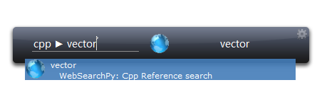
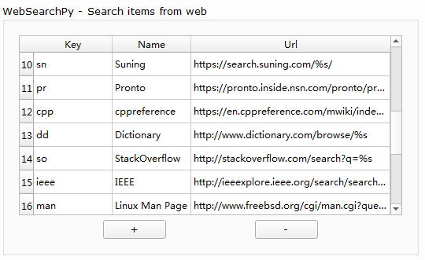

WebSearchPy¶
WebSearchPy allows you to search the web quickly.
The search engine and keywords is customizable in option dialog.
Take cppreference as an example.
The Key is what you can put in search box to indicate a web search. Once you have input cpp (make sure the WebSearchPy item is focused), press tab and then input what you want to search (this time I want to search vector ) and press Enter . Your default web browser should open and do the search.
The Url is the template to make a search link.
Here is the cppreference search link: https://en.cppreference.com/mwiki/index.php?title=Special%%3ASearch&search=%s
Pay attention to the %s, this would be replaced by your search content.